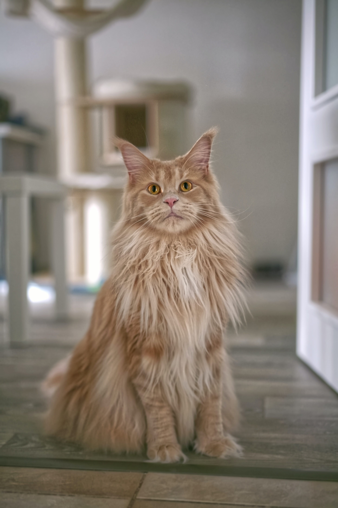
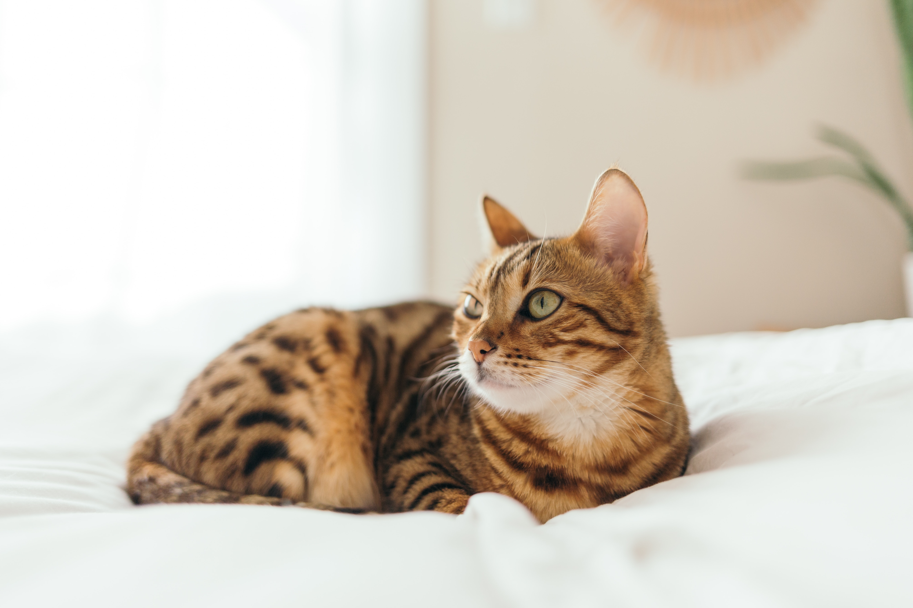
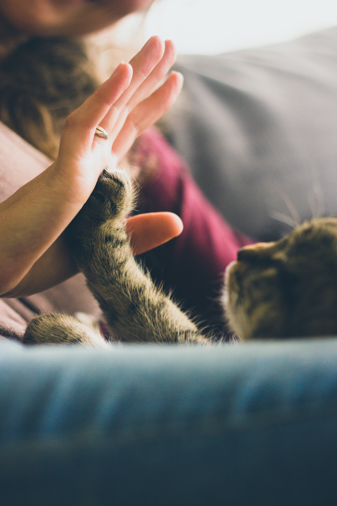

Descobrindo as raças de gatos
Confira a tabela abaixo para conhecer algumas das raças mais famosas:
| Raça | Origem | Pelagem |
|---|---|---|
| Siamês | Tailândia | Curta e sedosa |
| Maine-coon | EUA | Longa e densa |
| Persa | Pérsia (Irã) | Longa e densa |
| Sphynx | Canadá | Ausência de pelos |
| Bengal | EUA | Curta e manchada |
Galeria de fotos
Confira algumas fotos das raças mencionadas na tabela.
Siamês

Maine-coon
Persa
Shhynx

Bengal
Curiosidades
Aqui estão mais algumas curiosidades que ilustram o quão fascinante e diversificado é o mundo dos gatos. Aprofundar nosso entendimento sobre esses animais adoráveis torna nossa convivência com eles ainda mais cativante e enriquecedora.
-

- Ronronar como terapia: o ronronar dos gatos não é apenas um sinal de contentamento, ele também tem efeitos calmantes e terapêuticos, tanto para os gatos quanto para os humanos. Acredita-se que o som do ronronar tenha propriedades curativas.
- Gatos com DNA de leopardo: alguns gatos domésticos como o Bengal possuem o DNA de leopardos em sua linhagem. Essas raças têm padrões de manchas semelhantes aos dos leopardos, indicando suas origens selvagens.
- Gatos e o trabalho de escritório: ter um gato pode tornar o trabalho de escritório mais agradável. Há quem diz que os gatos
são conhecidos por
atrapalhar"ajudar" seus donos ao deitar-se sobre o teclado do computador ou esgueirar-se nos papéis. - Gatos que detectam terremotos: há relatos de gatos que parecem detectar terremotos antes de eles acontecerem. Acredita-se que eles possam sentir as vibrações da terra.
Se você é um amante de gatos ávido em busca de informações úteis, inspiração e histórias cativantes, não pode perder o Catster! Catster é uma revista online dedicada a gatos e seus donos. Eles oferecem artigos sobre cuidados com gatos, raças, comportamento e notícias relacionadas a felinos.
Confira, inspire-se com dicas úteis e junte-se a uma comunidade vibrante de amantes de gatos em: caster.com
Voltar